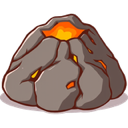

อื่น ๆMore
แนะนำเกมAbout the game
เกมแนวเพาะพันธุ์และจัดทีมสู้อัตโนมัติ: เลี้ยงและผสมพันธุ์ Dyeling แล้วจัดทีมลงสนาม การต่อสู้เดินเองทั้งหมด คุณเลือกแค่ ปั้นตัวไหน ใส่การ์ดอะไร และวางใครไว้แถวไหน
- ชนะแล้วได้เหรียญและของ เอาไปซื้อ ผสมพันธุ์ สร้างรูน และปั้นตัวต่อ
Dyeling มี 10 เผ่า
- เผ่าเดี่ยว (ธาตุเดียว):
 ปฐพี (ดิน) · วารี (น้ำ) · วายุ (ลม) · อัคคี (ไฟ)
ปฐพี (ดิน) · วารี (น้ำ) · วายุ (ลม) · อัคคี (ไฟ) - เผ่าผสม (สองธาตุ): น้ำแข็ง (น้ำ + ลม) ·

ลาวา (ไฟ + ดิน) · หมอก (น้ำ + ไฟ) · โคลน (น้ำ + ดิน) · ควัน (ลม + ไฟ) · ทราย (ลม + ดิน)
A creature-breeding game with auto battles: raise and breed Dyelings, then send a team into battle. Battles play by themselves. You choose only who to build, which cards to equip and who stands in which row.
- Wins give coins and goods to buy, breed, craft runes and build with
Dyelings have 10 tribes
- Single tribes (one element): Earth · Water · Wind · Fire
- Mixed tribes (two elements): Ice (water + wind) · Lava (fire + earth) · Mist (water + fire) · Mud (water + earth) · Smoke (wind + fire) · Sand (wind + earth)